Emi redesign
Generated from a written brief only: a 32-year-old British team lead with auburn shoulder-length hair parted on the left, warm brown eyes, tortoiseshell glasses, dimples and round cheeks only when smiling. Same prompts on two models. Safe images only.
Round 3: rounder face, young motherly warmth, blazer, clear glasses

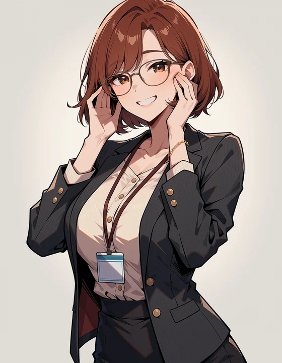
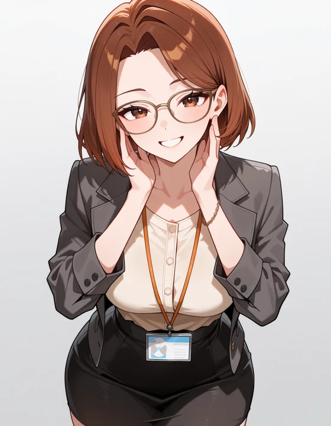
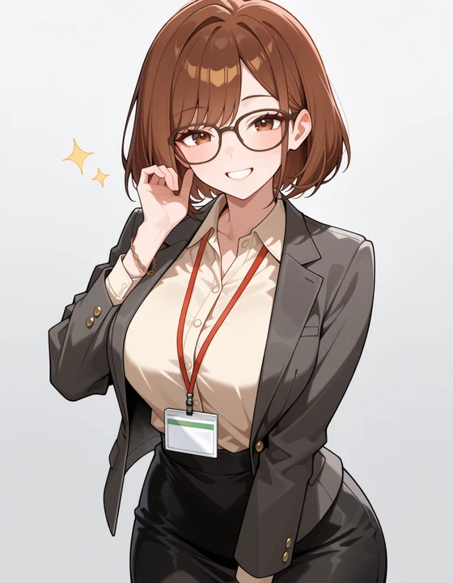
Round 3: expressions (RDBT, seed 41)

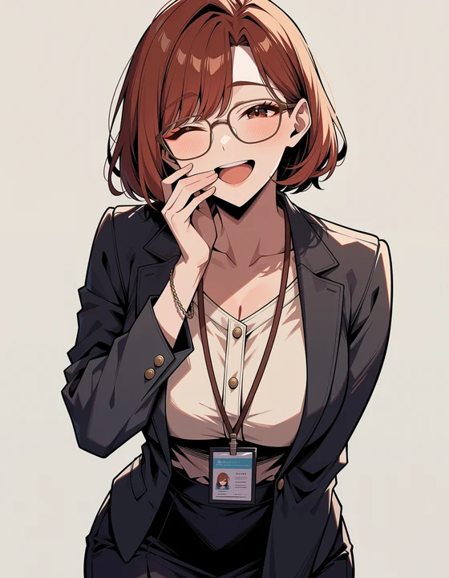
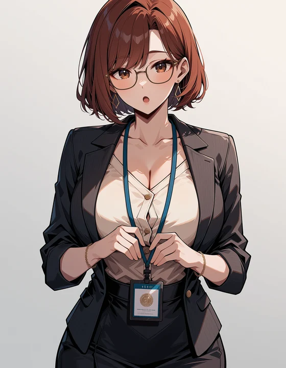
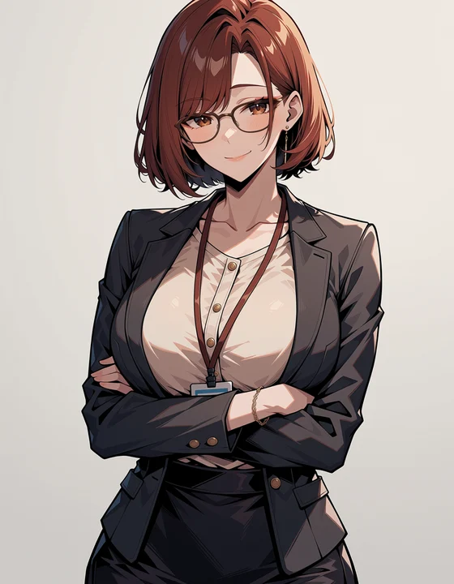
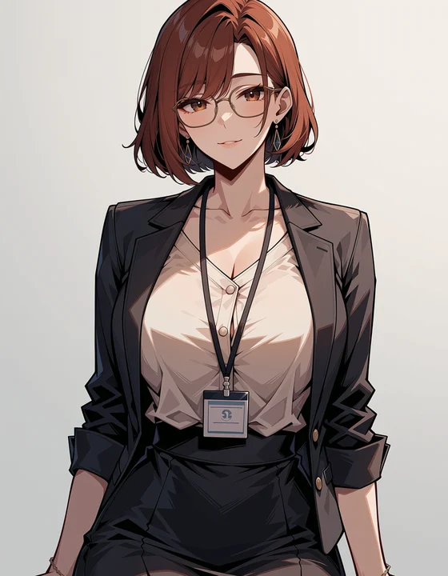
Previous round, for comparison
Current Emi in the game
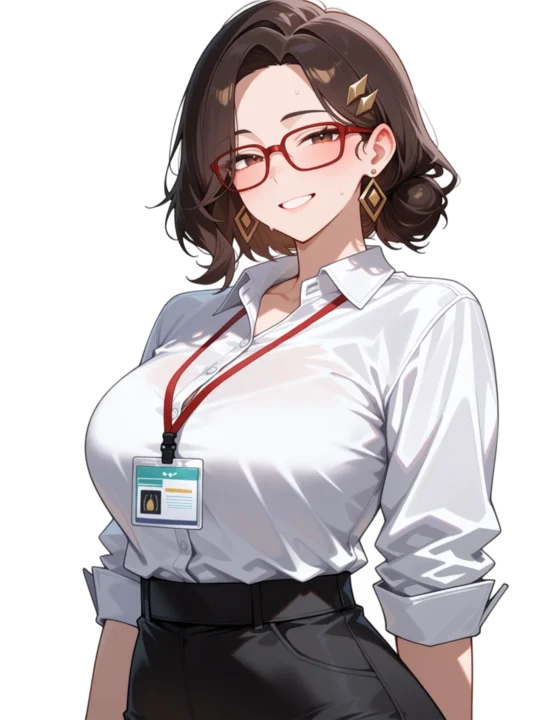
RDBT Anima (main): portraits

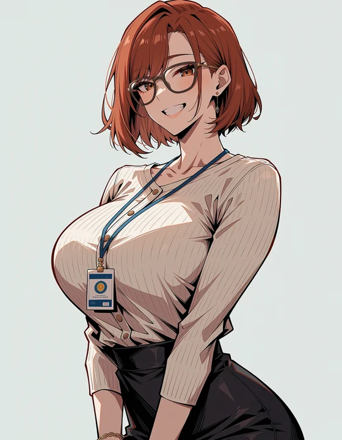
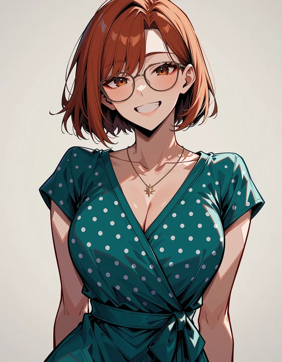
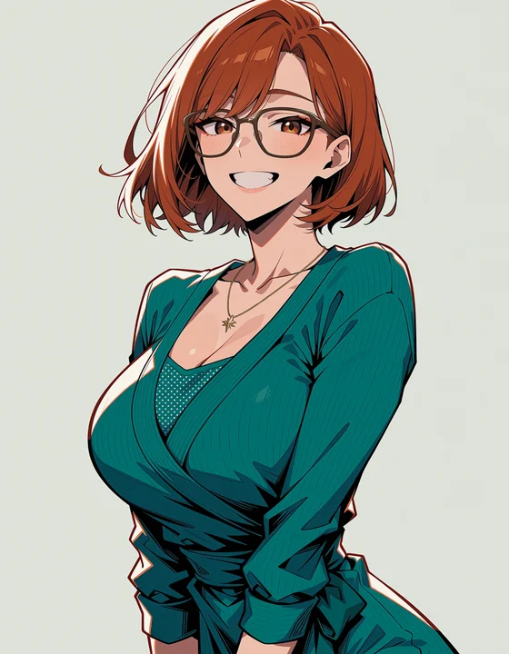
RDBT Anima (main): expressions (work outfit)
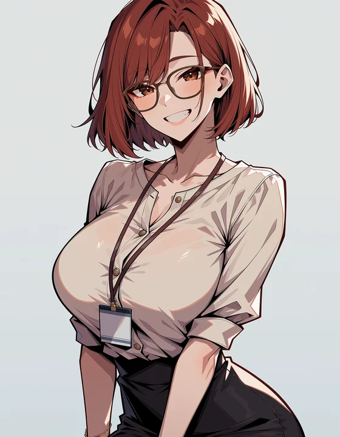
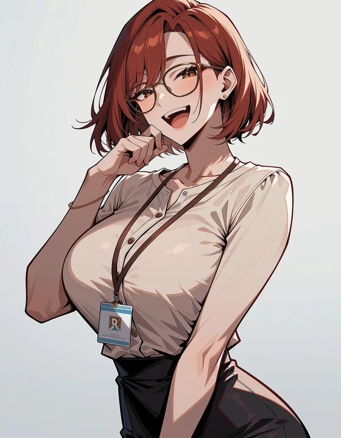
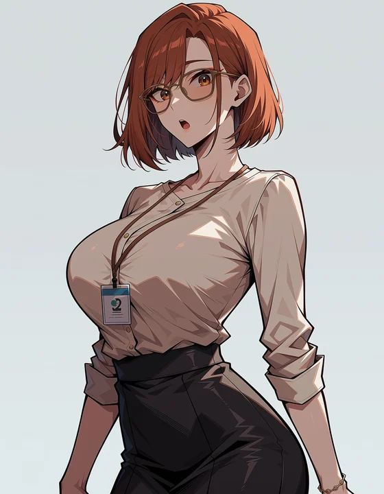
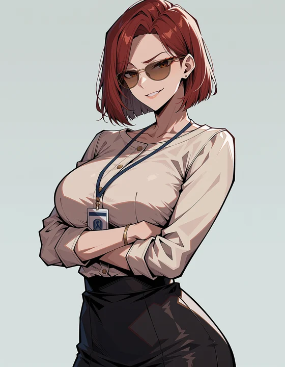
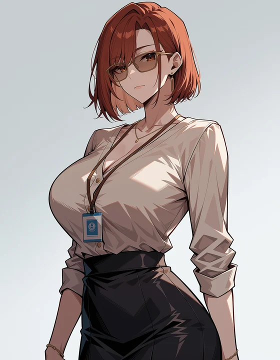
Nova Anime AM (comparison): portraits
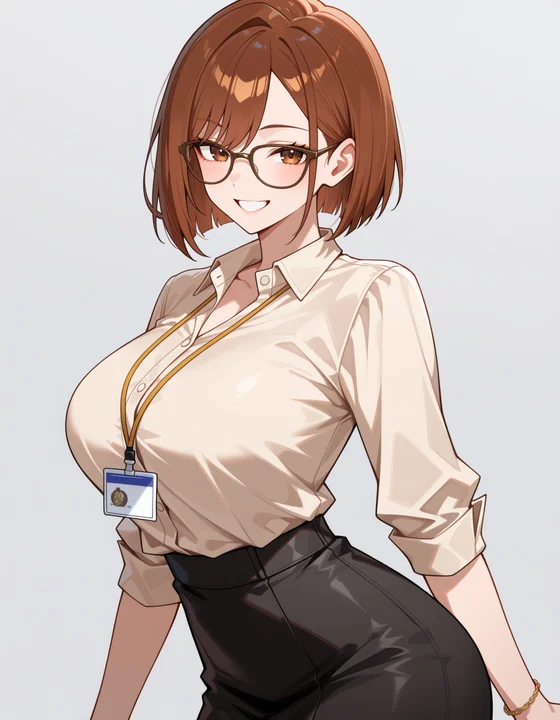
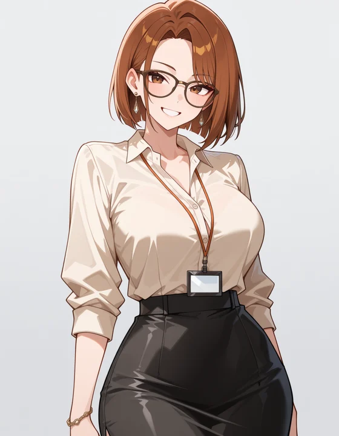
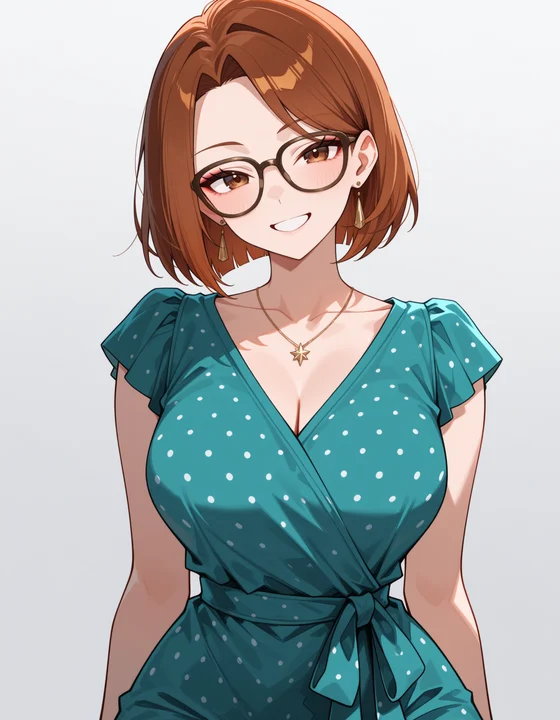
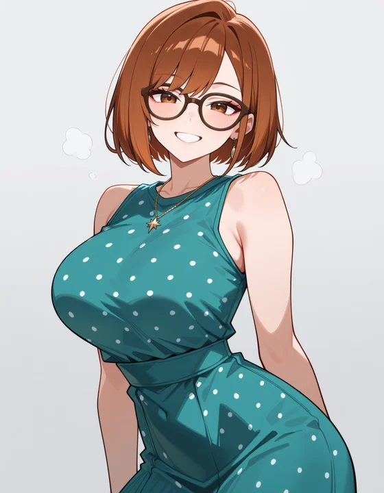
Nova Anime AM (comparison): expressions (work outfit)

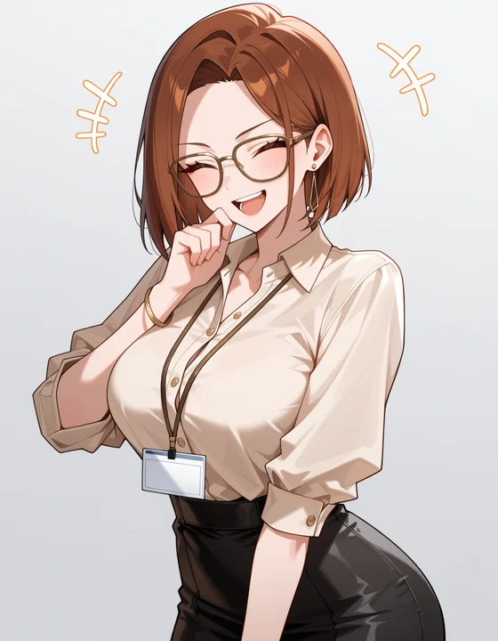
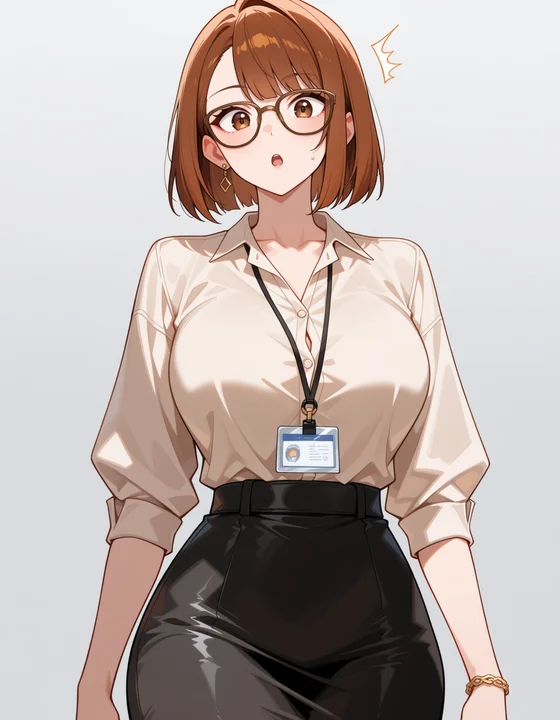
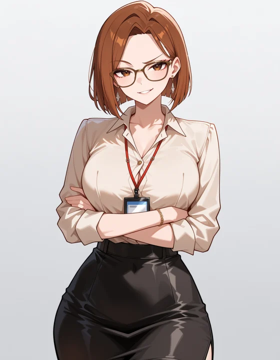
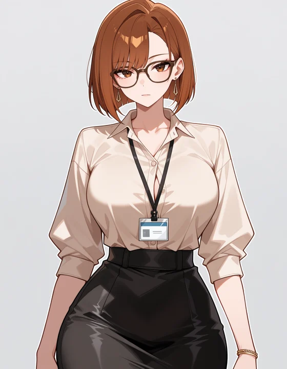